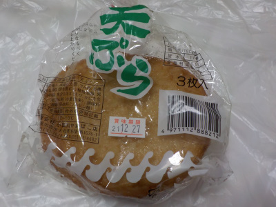

いいものを探そう ～出雲らへん～
島根県出雲市杵築南1076-1
2021/12/23
小田川かまぼこ店の天ぷら

おでんとかじゃなくて、普通な感じのカマボコの天ぷらが食べたくなって買いました。
袋を開けると天ぷらの甘くて旨そうないい匂いがしました。
これは平たくて硬め食感です。表面が広いので揚げた感があり美味しかったです。
【小田川かまぼこ店TOP】
【地域TOP】
【HPTOP】
【『大社町杵築らへん』の他の情報はこちら】
【おいしいものを食べよう。】【たくさん寝よう。】
【ソロ活をしよう!】【季節感のあることをしよう。】【動画視聴はほどほどに。】【当サイトの全てのコンテンツは無断転載禁止です。】